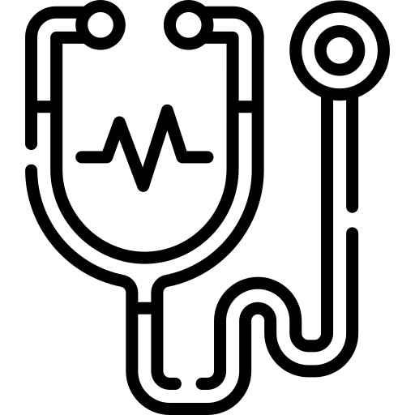

Hospital Floripa Mais Tec
 Descubra uma nova forma de salvar vidas
no FMT! Somos um hospital especializado em doação de órgãos e sangue, comprometidos em
transformar generosidade em esperança. Ao escolher o FMT, você está se associando a uma
instituição dedicada a promover a vida e fazer a diferença nas comunidades que atendemos.
Descubra uma nova forma de salvar vidas
no FMT! Somos um hospital especializado em doação de órgãos e sangue, comprometidos em
transformar generosidade em esperança. Ao escolher o FMT, você está se associando a uma
instituição dedicada a promover a vida e fazer a diferença nas comunidades que atendemos.
 Doa Vida, Doe Amor:
Em nosso hospital, a doação de órgãos e sangue é mais do que um ato, é uma expressão
de amor e compaixão. Cada doação faz uma diferença significativa na vida de quem precisa, proporcionando
uma nova chance e renovando esperanças.
Doa Vida, Doe Amor:
Em nosso hospital, a doação de órgãos e sangue é mais do que um ato, é uma expressão
de amor e compaixão. Cada doação faz uma diferença significativa na vida de quem precisa, proporcionando
uma nova chance e renovando esperanças.
 Especialistas em Cuidados Humanizados: Nossa equipe de profissionais altamente qualificados não apenas realiza procedimentos médicos, mas também oferece apoio emocional, compreensão e atenção personalizada a cada doador. No FMT, você é mais do que um doador; é uma parte vital da nossa missão de curar e salvar vidas.
 Inovação e Tecnologia
a Serviço da Vida: Estamos comprometidos com a mais avançada tecnologia médica para
garantir procedimentos seguros e eficazes. No FMT, a inovação se alia à paixão pela
vida, proporcionando um ambiente propício para doações que fazem a diferença.
Inovação e Tecnologia
a Serviço da Vida: Estamos comprometidos com a mais avançada tecnologia médica para
garantir procedimentos seguros e eficazes. No FMT, a inovação se alia à paixão pela
vida, proporcionando um ambiente propício para doações que fazem a diferença.
 Programas de
Sensibilização: Acreditamos na importância da educação e sensibilização. Promovemos
programas comunitários para aumentar a conscientização sobre a doação de órgãos e sangue, capacitando as
pessoas a se tornarem agentes de mudança na sociedade.
Programas de
Sensibilização: Acreditamos na importância da educação e sensibilização. Promovemos
programas comunitários para aumentar a conscientização sobre a doação de órgãos e sangue, capacitando as
pessoas a se tornarem agentes de mudança na sociedade.
Ao escolher o FMT, você está escolhendo fazer parte de algo maior, algo que transcende o ordinário. Junte-se a nós e faça parte dessa jornada inspiradora de doação e solidariedade. Venha doar vida, venha doar amor no FMT - Onde a esperança ganha vida!
IMPORTANTE! Todas as informações foram criadas pelo ChatGpt.